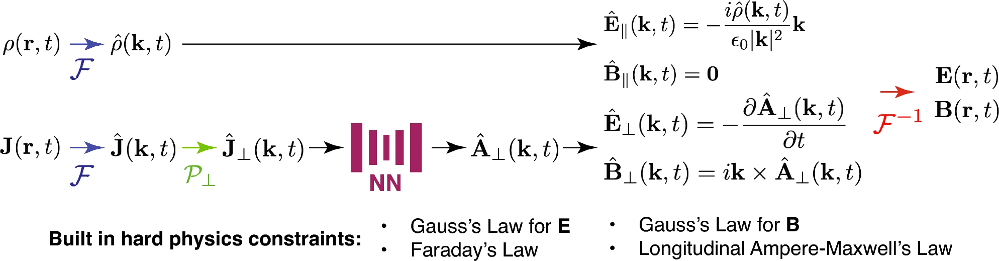
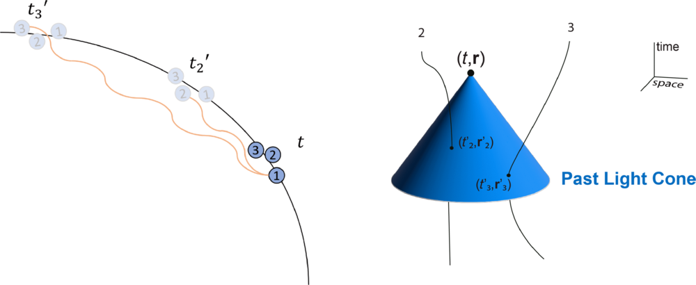
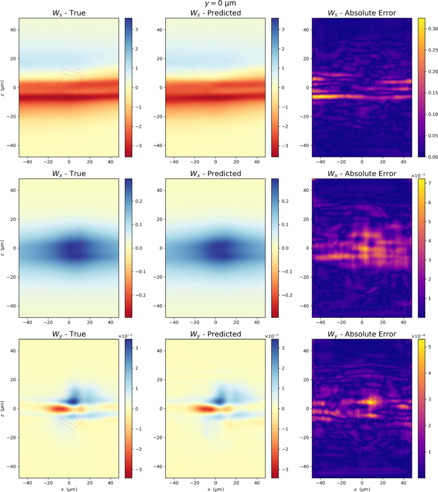

Current Research
Physics-Constrained Machine Learning
While machine learning algorithms can do ok near data they've been trained on, far away from that they can fail spectacularly. So, in order to improve their generalizability, we can impose physics constraints into them. This also can improve our trust in their outputs since we can say 'Hey, at the very least, the model's answer isn't breaking the laws of physics!'.
An example of how this can be implemented is to consider trying to get electromagnetic fields, \(\mathbf{E}\) and \(\mathbf{B}\). Rather than having an ML model predict them directly, have it instead output the scalar and vector potentials, \(\phi\) and \(\mathbf{A}\). You automatically get Gauss' law for magnetism since: \[ \mathbf{\nabla} \cdot \mathbf{B} = \mathbf{\nabla} \cdot (\nabla \times \mathbf{A}) = 0.\] You also get Faraday's law (exercise left for the reader). My colleagues and I applied this idea (and other constraints) to the case of magnetohydrodynamics and found these constraints helped the models.
Using potentials, though, introduces the issue of gauge choice and requires you to model 4 fields. However, we can bypass the gauge issue by focusing on the physical degrees of freedom in the potentials. Not only can you reduce the fields needing modelling down to 2, but you also pick up additional Maxwell's equations! It's convenient to do this in Fourier space, and thus we developed the FoHM-NO (Fourier-Helmholtz-Maxwell Neural Operator), whose outline you can see below. We applied it for getting the EM fields produced by an electron beam in a solenoid.

The above focused on hard constraints, which are automatically satisfied. Cooking them up often takes some work. Alternatively, it's much easier to put soft constraints where ML models are encouraged to satisfy a physics constraint, particularly a partial differential equation. This is usually done by adding a term in the loss function and is the idea behind Physics-Informed Neural Networks (PINNs). If the physics of the problem is known, this can act as an effective regularizer. Now, for real problems, you can also have a term loss function to fit data. The problem is these two terms fight one another. Also, due to uncertainties, you don't want to overfit the data. Hence, after the data fit is 'good enough', you might want to focus following the physics, with the data fit term only turning on again if it starts to get bad. This is what we did in this paper.
ML Surrogate Models
In physics in general and accelerators in particular, our simulations can be quite computationally demanding. This can make certain tasks, like using them to tune an accelerator in real time, unfeasible.
Much effort has been made by Silicon Valley to make ML models run fast on GPUs, so why not take advantage of that? Train a surrogate ML model. Yes, the ML answer won't be as accurate as the simulation. But if you're in a situation where a quick approximation is better than an extremely slow exact answer, it's worth it. The surrogate doesn't even need to replace the simulation in some cases, just complement it. For example, if you're optimizing you can begin with a wide search of parameter space using the surrogate, then do a finer search on a promising region using the slower-but-more-accurate simulation.One particular case of interest in accelerator physics is coherent synchrotron radiation (CSR). Electrons in a bunch undergoing circular motion emit synchrotron radiation. When the wavelength is much greater than the bunch length, \(\lambda \gg L\), the bunch looks point-like as far as the radiation is concerned. Hence, all the radiation can be seen as emitted from a single point and sums up coherently. Because of this coherence, radiation emitted by the tail and absorbed by the head, for example, can have quite a significant effect. Calculating the effect of CSR is vital since it increases the size of the electron bunch, which is undesirable. It is also extremely compuationally expensive, which makes it a very good case for a surrogate ML model.

My colleagues and I developed surrogate ML models for 3D CSR calculations and found we can speed things up by a factor of ~3,000. The models were able to generalize, though they eventually failed when the beam became far smaller than what they were trained on.

Bayesian Optimization for Accelerators
Optimizing under uncertainty describes much of accelerator operations. Unlike theoretical models, real-world machines are subject to thermal drifts, mechanical vibrations, sensor noise, etc. This means we never have a perfectly clear picture of the acclerator or beam. By using Bayesian Optimization, we can treat these uncertainties as part of the model itself. This allows us to find the most efficient operating points while safely accounting for the 'fuzziness' of our experimental data
Other Research
High \(x\) quarks
In another life, I worked in theoretical nuclear physics, looking at quarks and gluons (partons) inside the proton. Occasionally, a single quark can carry a large momentum fraction, called Bjorken \(x\), of the proton. My primary work involved finding out how this can possibly be. To do this, we had to first try to model the proton. With the scales involved, this requires working with both quantum mechanics and special relativity.The particular framework that many have found useful for describing the dynamics of partons bound inside the proton is light-front quantization. In everyday life where speeds are much less than the speed of light, \(v \ll c\), an object's trajectory in space-time runs pretty much in the \(t\) direction and it makes sense to use that as that coordinate to describe things. We can consider slicing up space-time in terms of constant \(t\), a 'foliation' if you want to sound more mathematically fancy. However, at higher energies where a particle is travelling near the speed of light, it begins to become a little awkward using that direction. So, if a particle was near light speed in the negative \(z\) direction, its trajectory then almost aligns with the \(x^+=t-z\) direction (in units where \(c=1)\). We call this 'light-front time'. Quantum mechanics had been formulated exclusively using the time coordinate, specifically imposing commutation relations at equal \(t\), until Dirac discovered the light-front formalism in the 1940's. There, the commutation relations are at equal \(x^+\). Its usefulness for hadronic physics and quantum chromodynamics was realized only much later.
Using this framework, we treated the proton as a valence core of 3 quarks surrounded by a residual structure, the latter of which can include sea quarks, gluons, a pion cloud, etc. We the parameters of our model by looking at experimentally-extracted parton distribution functions.